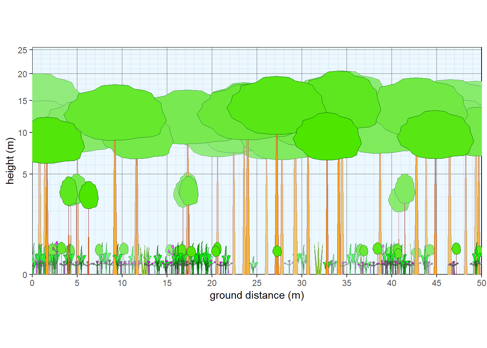
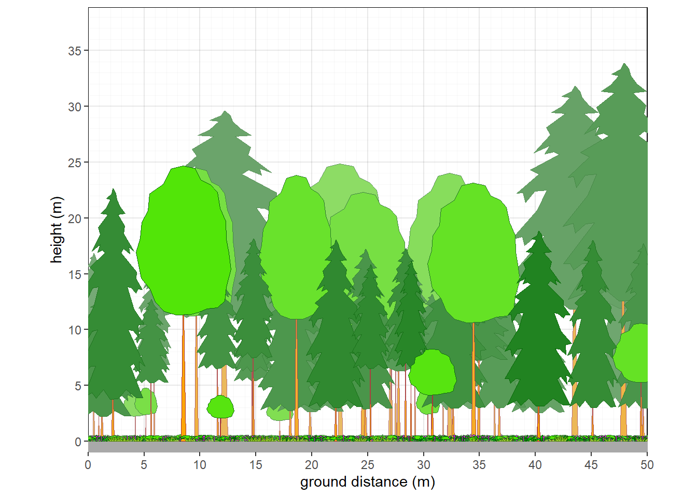
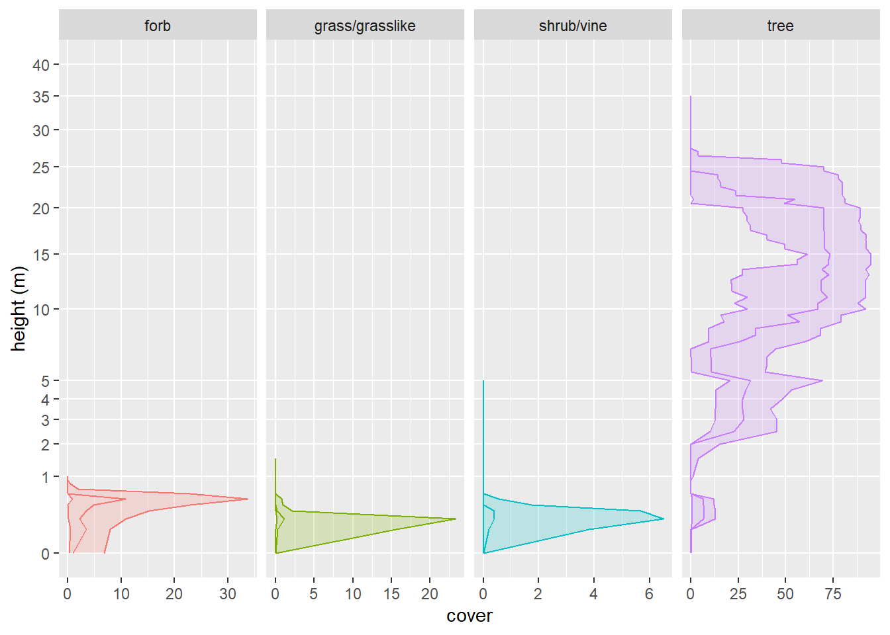
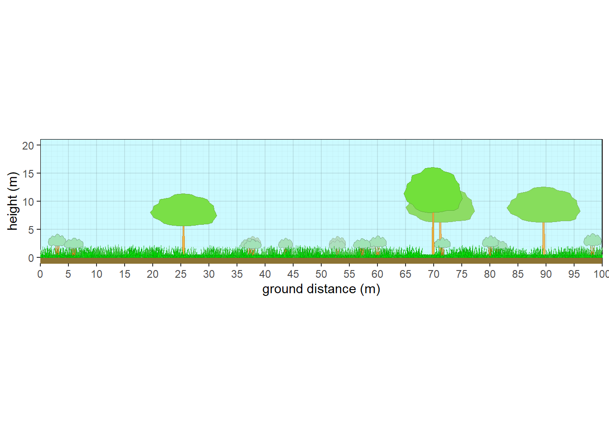
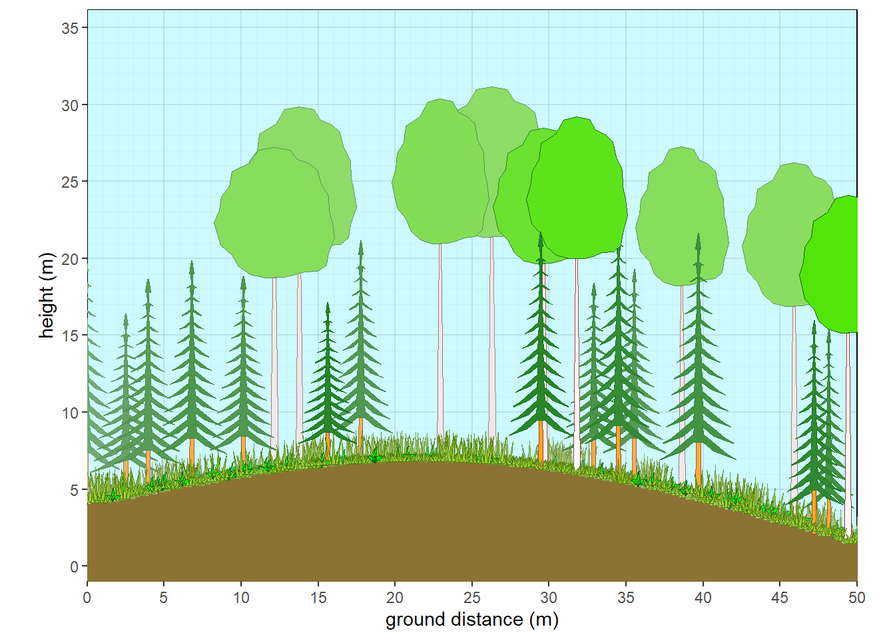
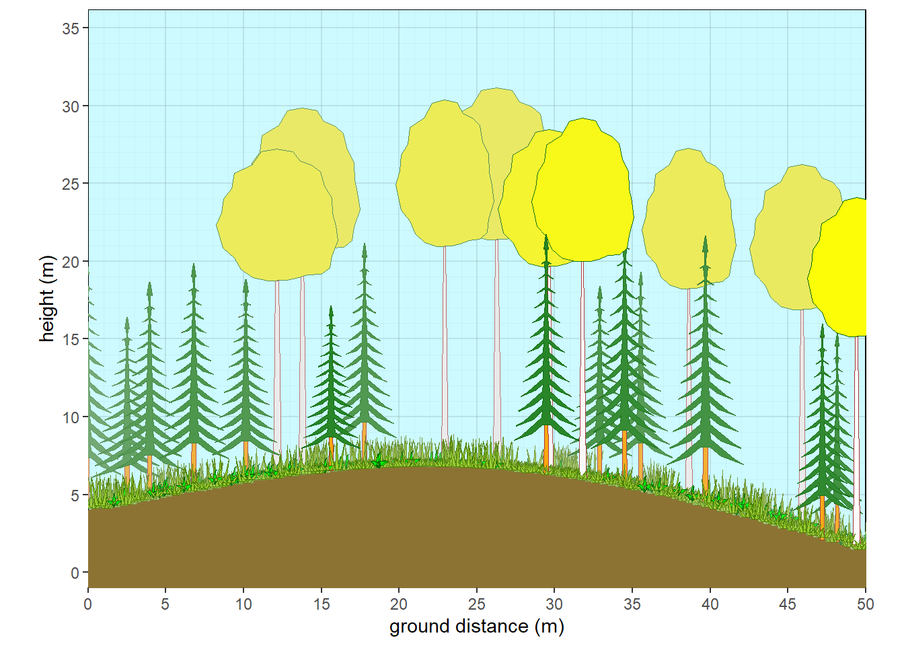
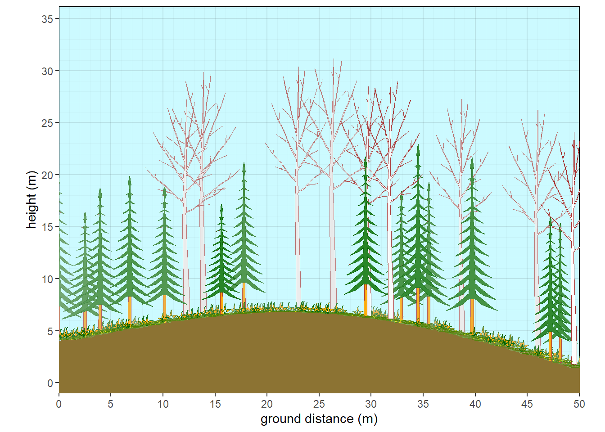
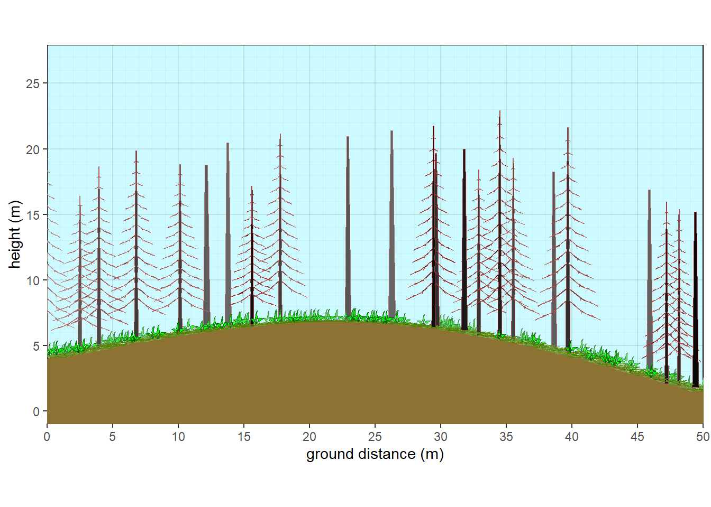
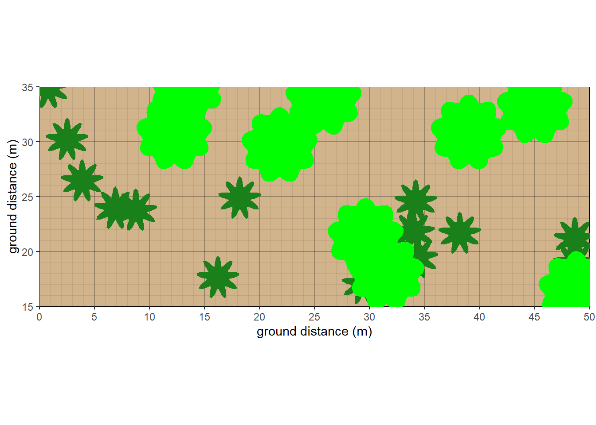

Chapter 10 Vegetation Plant Profile Diagrams
The reason vegnasis package was created in the first place is to generate pictorial drawings of vegetation structure using plant shapes. Currently, only the most basic shapes have been developed as a proof of concept: generic broadleaf, conifer, shrub, forb, graminoid, palm, and fern. Over time, it is expected that more templates would be drawn in Inkscape or similar vector drawing software, and converted to xy coordinates that can be plotted with the ggplot2 package. The graphical function simply uses the geom_polygon() element within ggplot to draw individual plants, with colors fading with distance to simulate depth.
Before plotting any veg plot data, it first needs to be standardized with vegnasis::clean.veg() or vegnasis::pre.fill.veg(). It is highly recommended to limit data to a single plot before processing with vegnasis::grow_plants(), which will create the elements needed to draw the plants with the vegnasis::veg_profile_plot() function.
10.2 Plot Plant Profiles
10.2.1 Northern Michigan hardwood forest
veg.select <- subset(veg, grepl('2022MI165002.P',plot))
plants <- grow_plants(veg.select)
veg_profile_plot(plants)Figure 10.1: Structure of northern Michigan hardwood forest.
10.2.2 Transformed Y axis

Figure 10.2: Structure of a northern Michigan forest (transformed).
10.2.3 Northern Michigan mixed forest
veg.select <- subset(veg, grepl('2022MI165023.P',plot))
plants <- grow_plants(veg.select)
veg_profile_plot(plants, unit='m', skycolor = 'white', fadecolor = 'lightgray', gridalpha = 0.1, groundcolor = 'darkgray')
Figure 10.3: Structure of northern Michigan mixed forest.
10.2.4 Northern Michigan pine forest
Override default tree colors and shapes.
veg.select <- subset(veg, grepl('2022MI165021.P',plot))
taxon <- c('Acer rubrum', 'Pinus resinosa')
crfill <- c(NA,"#80991A")
stfill <- c('gray',"#B36666")
crshape <- c(NA,'conifer2')
override <- data.frame(taxon=taxon,stfill=stfill,crfill=crfill,crshape=crshape)
veg.select <- veg.select |> left_join(override)
plants <- grow_plants(veg.select)
veg_profile_plot(plants)
Figure 10.4: Structure of northern Michigan pine forest.
10.2.5 Washington conifer forest
veg.select <- subset(veg, grepl('2021WA031024',plot))
plants <- grow_plants(veg.select)
veg_profile_plot(plants, unit='m', skycolor = 'white', fadecolor = 'lightgray', gridalpha = 0.1, groundcolor = 'darkgray')Figure 10.5: Structure of a Washington conifer forest.
10.2.6 Custom parameters
Many parameters can be adjusted such as making the plot longer or changing sky color. Adjust crown or stem color, switch to branches, and adjust slope.
#Make up savanna data
thiscolor = rgb(0.6,0.9,0.7)
plot <- c('plot1')
taxon <- c('Quercus macrocarpa','UNK','Pteridium', 'Festuca', 'Andropogon', 'Liatris')
cover <- c(20,5,10,60,10,5)
crown.max <- c(15,4,1,0.6,2,0.4)
crfill <- c(NA,thiscolor,NA,NA,NA,NA)
dbh <- c(60,NA,NA,NA,NA,NA)
habit <- c(NA,'S.BD',NA,NA,NA,NA)
mydata <- data.frame(plot=plot,taxon=taxon, cover=cover, habit=habit, crown.max = crown.max, dbh.max = dbh, crfill=crfill)
veg <- mydata |> pre.fill.veg()
plants <- grow_plants(veg, plength=100) #Grow more plants on a longer 100 m plot (default was 50 m).
veg_profile_plot(plants, unit='m', skycolor = rgb(0.8,0.98,1), fadecolor = 'lightgray', gridalpha = 0.1, groundcolor = rgb(0.55,0.45,0.2), xlim=c(0,100))
Figure 10.6: Structure of a generic oak savanna
#Aspen with fir subcanopy
plot <- c('plot1')
taxon <- c('Abies','Populus','Pteridium', 'Festuca', 'Andropogon', 'Liatris')
cover <- c(15,30,10,60,10,5)
crown.max <- c(15,25,1,0.6,2,0.4)
crown.min <- c(2,15,NA,NA,NA,NA)
cw <- c(4,7,NA,NA,NA,NA)
crfill <- c(NA,NA,NA,NA,NA,NA)
stfill <- c(NA,'white',NA,NA,NA,NA)
crshape <- c('boreal',NA,NA,NA,NA,NA)
dbh <- c(NA,NA,NA,NA,NA,NA)
habit <- c('T.NE','T.BD',NA,NA,NA,NA)
mydata <- data.frame(plot=plot,taxon=taxon,cw=cw, crshape=crshape,cover=cover, habit=habit, crown.max = crown.max, crown.min=crown.min,dbh.max = dbh, crfill=crfill,stfill=stfill)
veg <- mydata |> pre.fill.veg()
plants <- grow_plants(veg)
#standard aspect ratio
#Set many custom parameters.
veg_profile_plot(plants, unit='m', skycolor = rgb(0.8,0.98,1),
fadecolor = 'lightgray', gridalpha = 0.1,
groundcolor = rgb(0.55,0.45,0.2),
xslope=-5, xamplitude = 4, xperiod = 100)
Figure 10.7: Aspen with fir subcanopy - summer
#fall
crfill <- c(NA,'yellow',NA,NA,NA,NA)
stfill <- c(NA,'white',NA,NA,NA,NA)
crshape <- c('boreal',NA,NA,NA,NA,NA)
mydata <- data.frame(plot=plot,taxon=taxon,cw=cw, crshape=crshape,cover=cover, habit=habit, crown.max = crown.max, crown.min=crown.min,dbh.max = dbh, crfill=crfill,stfill=stfill)
veg <- mydata |> pre.fill.veg()
plants <- grow_plants(veg)
#standard aspect ratio
#Set many custom parameters.
veg_profile_plot(plants, unit='m', skycolor = rgb(0.8,0.98,1),
fadecolor = 'lightgray', gridalpha = 0.1,
groundcolor = rgb(0.55,0.45,0.2),
xslope=-5, xamplitude = 4, xperiod = 100)
Figure 10.8: Aspen with fir subcanopy - fall
#winter
crown.max <- c(15,25,1,0.1,0.1,0.1)
crfill <- c(NA,'NULL','orange','yellow','yellow','yellow')
stfill <- c(NA,'white',NA,NA,NA,NA)
crshape <- c('boreal','hardwood',NA,NA,NA,NA)
mydata <- data.frame(plot=plot,taxon=taxon,cw=cw, crshape=crshape,cover=cover, habit=habit, crown.max = crown.max, crown.min=crown.min,dbh.max = dbh, crfill=crfill,stfill=stfill)
veg <- mydata |> pre.fill.veg()
plants <- grow_plants(veg)
#standard aspect ratio
#Set many custom parameters.
veg_profile_plot(plants, unit='m', skycolor = rgb(0.8,0.98,1),
fadecolor = 'lightgray', gridalpha = 0.1,
groundcolor = rgb(0.55,0.45,0.2),
xslope=-5, xamplitude = 4, xperiod = 100)
Figure 10.9: Aspen with fir subcanopy - winter
#fire
crfill <- c('NULL','NULL',NA,NA,NA,NA)
stfill <- c('black','black',NA,NA,NA,NA)
crshape <- c('boreal',NA,NA,NA,NA,NA)
mydata <- data.frame(plot=plot,taxon=taxon,cw=cw, crshape=crshape,cover=cover, habit=habit, crown.max = crown.max, crown.min=crown.min,dbh.max = dbh, crfill=crfill,stfill=stfill)
veg <- mydata |> pre.fill.veg()
plants <- grow_plants(veg)
#standard aspect ratio
#Set many custom parameters.
veg_profile_plot(plants, unit='m', skycolor = rgb(0.8,0.98,1),
fadecolor = 'lightgray', gridalpha = 0.1,
groundcolor = rgb(0.55,0.45,0.2),
xslope=-5, xamplitude = 4, xperiod = 100)
Figure 10.10: Aspen with fir subcanopy - fire
#overhead view
taxon <- c('Abies','Populus')
cover <- c(15,30)
crown.max <- c(15,25)
crown.min <- c(2,15)
cw <- c(4,7)
crfill <- c(NA,'green')
stfill <- c(NA,NA)
crshape <- c(NA,NA)
dbh <- c(NA,NA)
habit <- c('T.NE','T.BD')
mydata <- data.frame(plot=plot,taxon=taxon,cw=cw, crshape=crshape,cover=cover, habit=habit, crown.max = crown.max, crown.min=crown.min,dbh.max = dbh, crfill=crfill,stfill=stfill)
veg <- mydata |> pre.fill.veg()
strats <- setstrats(veg)
stand <- setstand(strats)
plants.overhead<- setplants.overhead(strats, stand)
veg_overhead_plot(plants.overhead, groundcolor = 'tan')
Figure 10.11: Overhead view